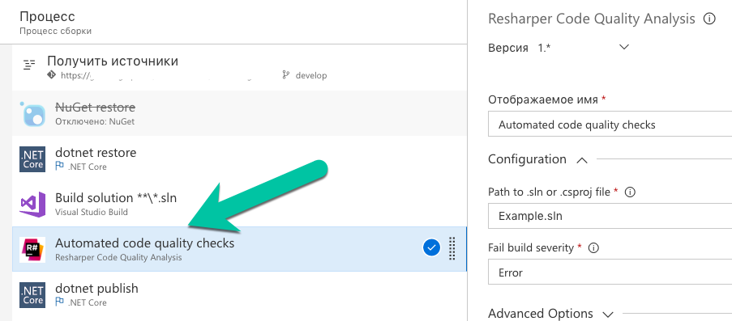
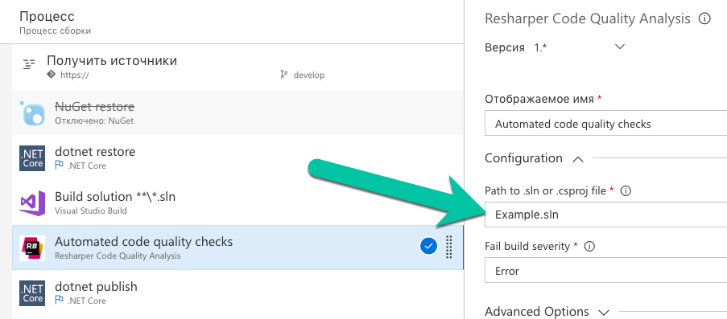
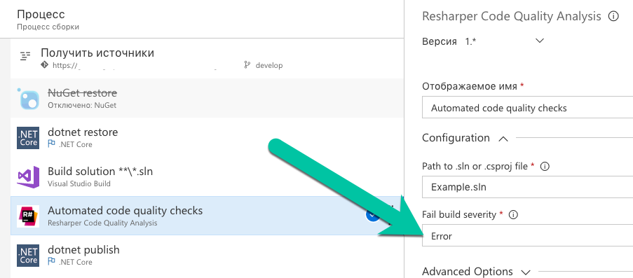

Adding Resharper Code Quality Analysis to TFS/VSTS
2018-05-15
This guide shows how to integrate Resharper code quality analysis into TFS/VSTS build pipeline.
Setup Process
Step 1: Create New Build Step
First, add a new build step to your TFS/VSTS pipeline.

Step 2: Configure Solution Name
Specify the solution name for analysis.

Step 3: Set Severity Level
Configure the severity level for code quality analysis.
